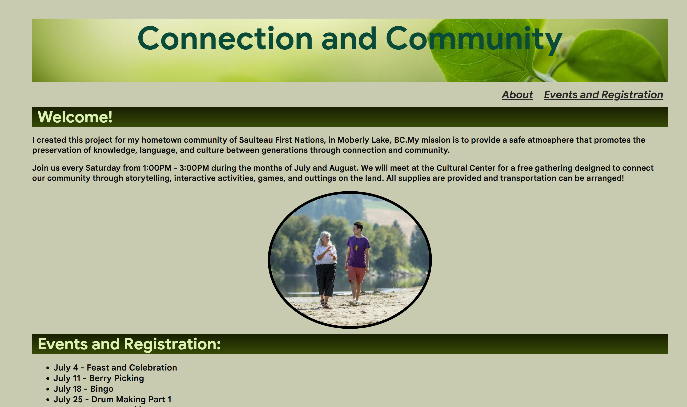
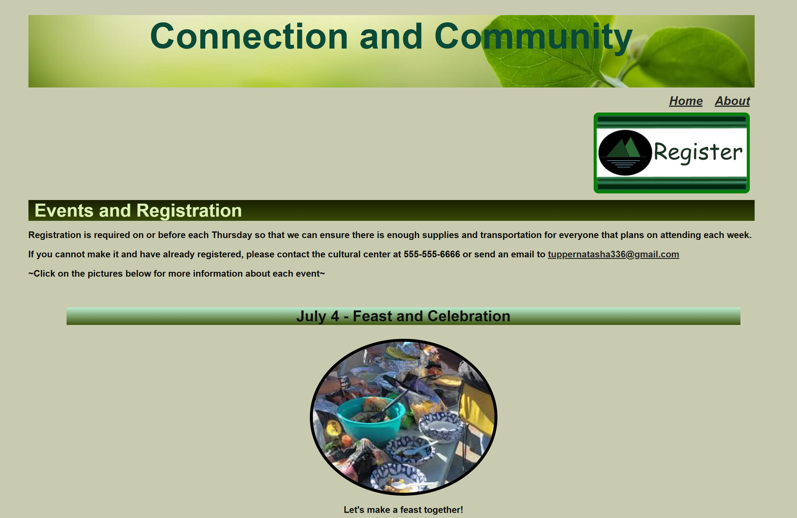
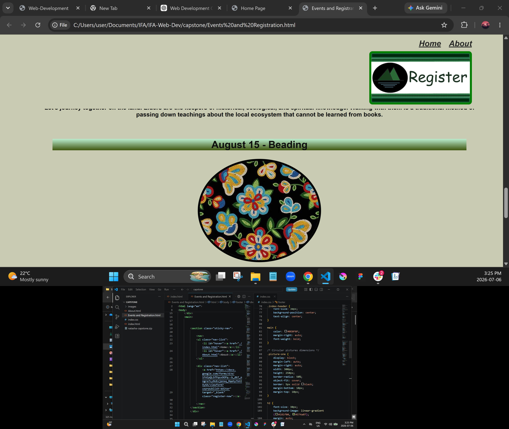
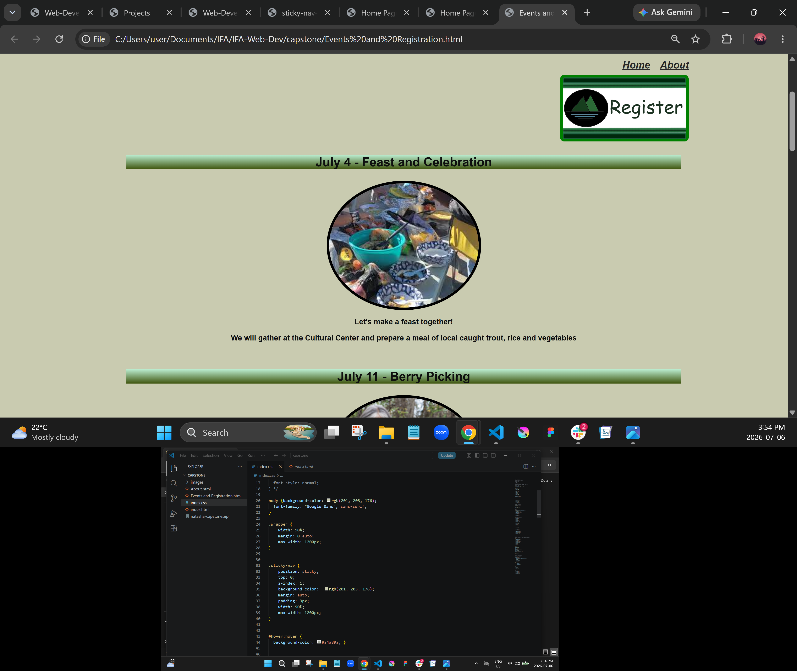
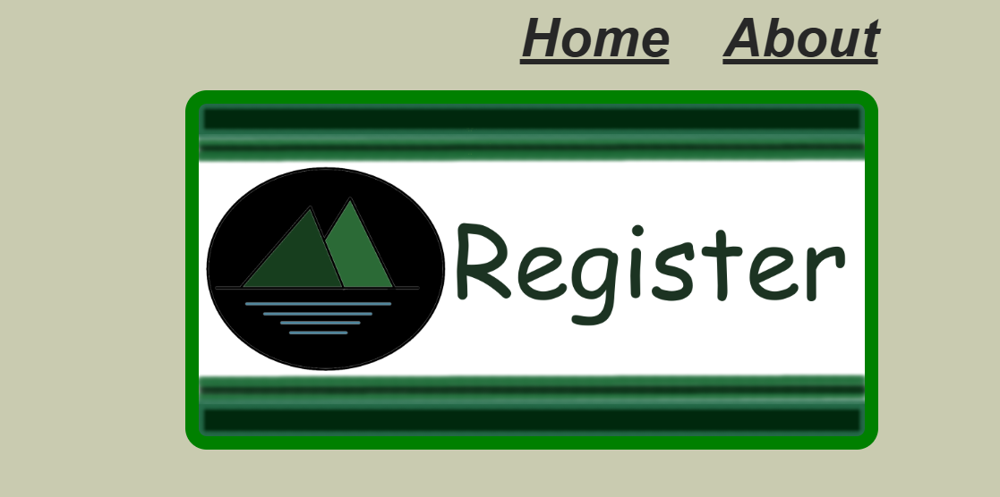
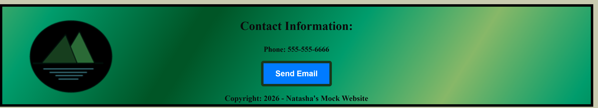

As an aspiring UX designer, I needed a portfolio that would effectively demonstrate both my design thinking and technical abilities. Existing portfolio templates did not accurately reflect my personality, Indigenous identity, or multidisciplinary skill set.
The challenge was creating a website that balanced professionalism with creativity while making it easy for recruiters and hiring managers to explore my work.
One challenge was organizing multiple types of work, including UX projects, digital artwork, and web development without overwhelming users.
To solve this, I grouped related content into clearly labeled sections and used consistent visual hierarchy to guide visitors through the site.
Another challenge involved creating a responsive layout that maintained usability across desktop and mobile devices. Through iterative testing and CSS refinements, I improved spacing, navigation, and content alignment.
This project involved the design and development of a responsive multi-page website using a clean, single column layout to provide users with a clear and focused browsing experience. The objective was to create an intuitive website structure that prioritized readability, accessibility, and seamless navigation across all devices. The website was developed using VS Code and organized into multiple pages, each dedicated to specific content and functionality.
The development process included implementing responsive layouts, accessible navigation menus, interactive elements, and color theory composition throughout the site. Careful attention was given to SEO and usability, to ensure a reliable and engaging experience.
The project allowed me to combine web development techniques with visual design skills to create a cohesive digital experience.

I began by planning the website structure and organizing content into multiple pages to create a smooth user journey. The layout was designed to help users quickly find event information, understand available opportunities, and take action through registration.
The website included:


I implemented a sticky navigation menu that remains visible as users scroll through the website. This improves usability by allowing visitors to quickly move between pages without needing to scroll back to the top. The registration button also stays visable on the "events and regigistration" page so that the user can register at any time.

Interactive hover states were added to website links to provide visual feedback when users interact with navigation elements.
I designed a custom registration button and a logo using Krita to create a visually recognizable action point for users and to add the pages own branding identity.


The completed website demonstrates my ability to combine front-end development and user experience design to create a functional, engaging digital product. By incorporating interactive features, custom graphics, and user-centered design principles, I created a website that makes it easier for users to discover events, and participate in community activities.
This project represents my growing ability to design digital experiences that are both visually appealing and intuitive for users.